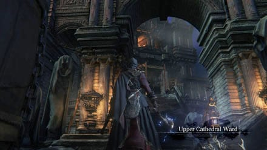
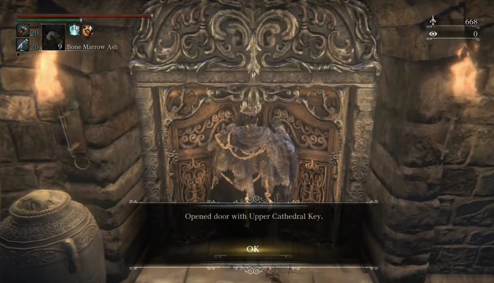
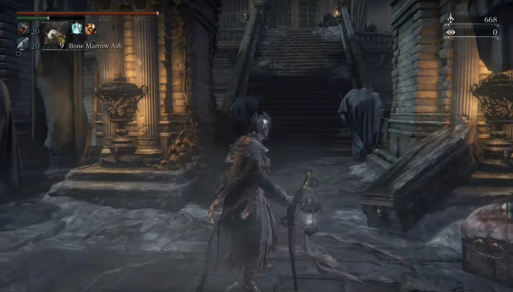
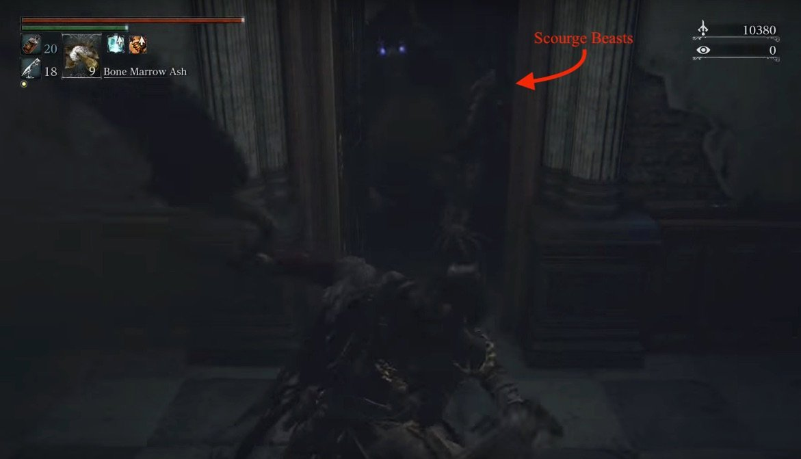
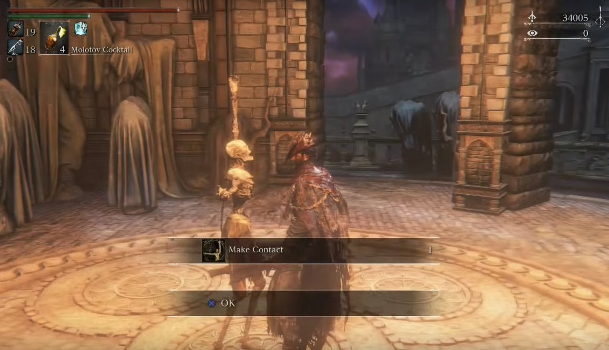

Upper Cathedral Ward is a location in Bloodborne. This is an area after Healing Church Workshop.
General Information

- Previous: Yahar'gul, Unseen Village
- Next: Orphanage
- Suggested Level: 50 and up
- Suggested Upgrade: +4 and up
- Bosses: 2
- Lamps: 1
- Insight Gained:
Upper Cathedral Ward Map
{kind=link}
NPCs in the area
- Immobile Statue: Teaches Make Contact gesture. Not a real NPC per se though.
Bosses
Items
Weapons
Consumables
Specials
Enemies
Lore Notes
- After beating Father Gascoigne and ascending a ladder into a study as you're entering Cathedral Ward , a note is around the first table, reading the following, "The Byrgenwerth spider hides all manner of rituals, and keeps our lost master from us. A terrible shame. It makes my head shudder uncontrollably.".
- "A watchman of Byrgenwerth guards the gate with a password, the sacred adage of the Grand Cathedral." From a note atop the tower where you need to drop down to be able to open the second gate.
- The note on the right side near some candles before you ascend the steps inside the Grand Cathedral in Cathedral Ward, reads : "Heir to the ritual of blood, purveyor of ministration. Place your hand on the altar's sacred covering, and inscribe Master Laurence's adage upon your flesh.".
- A note reading, "The sky and the cosmos are one. - The Choir.", can be found on the outside of the workshop building while ascending to Upper Cathedral Ward.
Upper Cathedral Ward Walkthrough
Getting to the Upper Section
To access Upper Cathedral Ward you need to obtain the Upper Cathedral Key which is found in Yahar'gul, Unseen Village. When you have the key, head to the top of Healing Church Workshop and open the previously locked door. Proceed through, and the title should prompt, letting know you have arrived.

Top of the Ward
When you first enter, head up the steps infront of you and kill the first Celestial Larvae enemy. Carry on heading up the stairs. You'll come to a gate and a bridge, pick up the Blue Elixir from the body at the gate then head down the bridge. Through the fog, two Church Servants will approach you. Up here they're stronger than down in the normal Cathedral Ward, so be careful, but engage them the same as you would any other time. You'll find the area lamp past them.

Past the lamp, carry on up the stairs and you'll come out to a semi-circular area, patrolled by many Celestial Larvae. Go right first, kill your way through the group to pick up the Great Lake rune at the dead end. Head back and before continuing up the second set of stairs, the Carrion Crows to the side of them, guard a body with a Frenzied Coldblood(9). Once you've picked it up, head up the stairs. You'll see a bonfire ahead of you and another Church Servant at the top of the stairs. This one is carrying a pretty big flame imbued scythe, so watch out. If you pull him down the stairs you can get him to walk through the bonfire which can shave a bit of HP off him. No matter how you deal with him, head up the stairs and prepare to be quiet.
At the top of the stairs you'll walk into a dark room with the unmistakeable sound of a Brainsucker. Creep up behind him and take him out. Make sure to pick up the Choir Set before you head out into the corridor. On the right you'll see a lootable body at the end of that corridor which holds a Madman's Knowledge. When you approach the body a Wolf Beast will burst through the window. Note that he has blue eyes instead of the normal red, the Scourge Beasts in this area are amped up compared to those you've fought before, so be prepared to parry, backstep and if you need to, run into the room where the Brainsucker was as it can't get through the door.
As you can't get through the door next to where the wolf burst in, head back to the other end of the corridor, open the door and you'll find yourself on a balcony above the main hall. When you head down the stairs three of the same variety of Scourge Beasts will fall from the ceiling and destroy the chandelier. As a jump scare, this works, as a device that makes the fight harder, it's even more effective as now there is very little light in the room. Try to pull the beasts one at a time. Alternatively, lure them to the door so they can't go through and cheese it. Patrolling on the left side of the room will be another Scourge Beast and around the right, you'll find a Brainsucker.

Clear the area then head to the rear of the room on the right side. Going down the tight corridor here will net you the Cosmic Eye Watcher Badge, guarded by a Brainsucker. At the locked main door is a body with some Ritual Blood(5). Head back to the other side of the hall and head down the tight corridor with the Scurrying Beast at the end. DO NOT chase it. Hiding around the right corner is another Brainsucker; a good strategy to kill the Beast without losing insight, is to chuck a Molotov at it before it leaves the room. Head up the ladder when you've sorted this area out.
Orphanage Open Day
When you reach the top of the ladder you'll be out on a balcony with a Brainsucker standing looking out over the room, which upon attacking, will lure another one out for an unfair battle. Killing them will cause one of them to drop the Orphanage Key.Take the stairs down to open a shortcut back to this point next to where the wolf beast burst in, then head back up. Open the doors on the balcony and you'll see a statue striking a pose. Interact with it and you'll learn the 'Make Contact' Gesture. For now, you're done here so head back down to the room you ended up in after climbing the ladder to find a bunch of goodies scattered across a hallway. This includes: Blue Elixir, Blindfold Cap, 2x Madman's Knowledge, and Pearl Slug. Continue down to the bottom of the hall. You can now open the enormous doors here.

This leads to the next section: The Orphanage.
Upper Cathedral Ward Map
 Anonymous
AnonymousYea so those beast that destroy the chandelier can absolutely get through the door…so if your trying to cheese it be warned. It’s tough for them to get through they will be stuck for a minute or two…but when one came flying through scared the **** out of me as I thought they were stuck…
- Anonymous
Best area for farming....with the right runes on like "moon" & "heir".
Easy +30k
- Anonymous
- Anonymous
i have the key for upper cathedral ward but i can't open the door. did i progress too far into the story or something?
- Anonymous
The recommended level is bizarre, considering I reached this area on a BL4 start, bought the Hunter's Emblem, have a sizable stock of unused Coldblood, and frequently purchase blood vials when I don't have enough to level.
And I'm level 77 going through here.
- Anonymous
Hands down creepiest area in the game and probably the creepiest in the entire series.
- Anonymous
Mostly throughout the game I've been fascinated by the horror elements, setting, lore, etc. But this area just scared the living **** out of me. The darkness, wind, subtle but cutting "music", design, enemies... F*ck.
- Anonymous
Is there Anyway to get here Early? Like a Progression skip Glitch like in Dark Souls?
- Anonymous
Based on Alfred’s dialogue I was actually hoping you would encounter some kind of high council or at least a surviving council member in this level. That would be really cool
- Anonymous
The blue elixers are dropped for a reason. Brainsuckers don't see you untill you visceral the first one, then just dodge back into the doorway, let your stamina regen, then slaughter the second bastard.
- Anonymous
This area is a good place to farm other than Mergo's Loft, you can get 45k echoes a bunch of stone shards, twin and chunks, quicksilver bullets and sometimes Shaman bone blade, if your discovery is high enough you can farm for madman's knowledge too. I'd recommend farming this place when you have 0 insights in case you mess up with the brainsuckers and don't have ps plus or too lazy to do chalice dungeons.
- Anonymous
The genuinely scary and suspenseful areas in this game are superb
- Anonymous
Very spooky area, aside from the comedy of activating the chandelier drop, then calmly closing the door.
- Anonymous
I'll never forget my first time going through this area. Wind howling, the dried tree branches moving. Why is it called the orphanage? What are these little slugs-like things? Then the footsteps, schlurp schlurp noises, blue eyes glowing in the dark, that accursed shrieking when the brainsuckers grab you. And it filled with a cold, chilling note.
i was so paranoid entering this place i did not like it one bit,and when the chandelier broke i panicked so bad lmao! i ran back out the door and said nope use the door to your advantage im not dealing with 6million different scourge beasts lol.
- Anonymous
The moment that you walk through the temple and suddenly the chandelier drops, howling in the distance, complete darkness and angry werewolves trying to rip you to shreds was one of the most Hunter moments in the game. I got chills, and it is so far my favorite "scene"
- Anonymous
- Anonymous
I'm level 67 and those blood sucking beasts are two shotting me, the werewolf are killing me almost immediately, and I can't progress anywhere, please change that
- Anonymous
- Anonymous
Better idea for the Wandering Madness: Instead of chasing it or wasting a molotov, just kill the Brainsucker, then quit and reload. No monsters respawn, and the Madness critter is back and safe to kill without using up resources unnecessarily. It's also safer.
- Anonymous
I can confirm - even after the patch, it's possible get the Orphanage key by attacking the brainsucker through the locked door. Use Threaded Cane in whip form. Roll at the door then use a transforming attack (L1). It will clip through the door and may or may not hit the sucker. Keep trying until it does. Once the sucker is drawn, KEEP GLUED TO THE DOOR AND IMMEDIATELY SWITCH OUT A WEP WITH A GOOD THRUST ATTACK. LUDWIG'S GREATSWORD CHARED R2 IS BEST. Dont worry for the suckers attacks wont hit through the door. But u must hit him quickly otherwise he could lose interest and go back. Tiresome, I know, but it beats drudging through the corridor of nopes and getting your brain liquidated.
- Anonymous
- Anonymous
while on the set of stairs with the first reaper guy, one of the wolves inside was trying to attack me through the wall, i could see its claw marks sparking on the wall. I used charged attacks w/LHB and managed to get it through the wall :p
- Anonymous
Quick tip for anyone having difficulty with Brainsuckers, they are Very Weak to Thrust attacks, (everything kinda is but these fuckers take exponentially more damage from Thrust) so weapons like Ludwigs Holy Blade, Threaded Cane (Cane form) or Kirkhammer (Sword form) with R2 works very well.
- Anonymous
I know this is a pretty brutal section so I figured I'd post a run-through for those of you who just want through it ASAP. No items or anything like that. Please note you will need threaded cane for this.
From upper cathedral ward lantern:
Run up the stairs and turn left. Continue past crawling enemies until you hit another staircase. Go up and kill the enemy with big glowing scythe. Continue into building and down the stairs. Watch for brain sucker on left. Head through the door and turn right down a long hallway with an item at the end. Ignore this item as you will be ambushed by werewolf. At the end of the hall there is a locked door with a brain sucker on the other side. Use the r2 + forward attack with the threaded cane to get its' attention. When it moves toward the door kill it with your upgraded weapon. Once it is dead it will drop orphanage key. Return back down the hall and look for a door on the right. Head through that and you will come to some stairs. Before you get to the bottom throw a blood cocktail to distract the wolves that drop on you. Head straight through the room and open the door then pull the lever to open the gate and return to lantern. Up the stairs in the gate room leads to celestial emissary.
May the good blood guide your way.
- Anonymous
The Brain Suckers... My God... Something to be added is the about ones on the upper balcony. If you go to kill the first one, the second will start to attack you. My God, I wish these enemies were never made...
- Anonymous
This page definitely needs to be updated. It's missing a lot of information
- Anonymous
If anyone wants to co op this area, please comment below, the brain suckers are giving me pause to solo this area
or message me at kingtofu-the-9th I will also help you, of course.
- Anonymous
Anyone notice the trees alongside the initial bridge before the first lantern are kinda... off? I'm fairly certain trees aren't supposed to move like that.
- Anonymous
- Anonymous
If you're having trouble with the brainsuckers, the torch is very affective.
- Anonymous
Wiki says you need to kill 2 brainsuckers near the wolf for the key. False. Just kill the one closest to the wolf.
- Anonymous
Lost almost 20 insight to those stupid brain suckers and by the sound of some of the other comments I got off lucky. Whoever programmed them to spam that grab spell every half second needs to be punched in the face. There's a difference between tough and straight up bull*****.
- Anonymous
You bellends. "Sneak attack the one on the balcony" yeah but while you do that two others sneak up on your ass. *****ing twats
- Anonymous
- Anonymous
Feel like im underpowered, but i have beaten that great one(cant remember his name)
- Anonymous
Hey just fond out that if you hit the big window in the Lumenflower garden's bonfire it breaks, not sure if it is known but i couldn't find references to this hidden path.
- Anonymous
SPOILER! This just happened to, at the start of the cathedral, on the stairs where the Church giant with the scythe is, if you have been attacked by the wolf that comes in from the window, it will stay there and and it will try to attack you from the other side when you are on those stairs again, he can be attack, but so can you, so use a long ranged weapon.
- Anonymous
I know that very few areas in Souls Games tend to have music but this music is what makes this area one of my favourites (the same with Hypogean Gaol). It's not too loud and only adds to the atmosphere. I understand the lack of music is meant to build atmosphere but for me that's overshadowed by the loud character footsteps that you hear for almost the entire game. On later playthroughs, the lack of music gets boring for me and I have to revert to outside sources of music to remain interested, at least occasionally. It's the same with the other Souls Games.
- Anonymous
Bloodstone chunk x2 needs to be added to item list here. Located on a crawler (crystal lizard) just be for you reach the ladder leading up to the door with 'make contact' gesture. Also, the wolf beast here seem to be a decent source of farm for shards, twin shards, and I've gotten a chunk from one. Done the farm run only a couple of times, but shards are def very common, twin common/rare, chunks rare/very rare?? Needs more confirmation.
- Anonymous
So far, I've seen no one else realize that the musical score is actually Dark Sun Gwyndolyn's theme slowed down. No, really, just listen to the vocals. Why it's there, I'm not sure other then "why not?"
So I followed the game progression route of this site. When I got to the area where the Make Contact Gesture guy is, he wasn't there. Only a body on the floor laying down. Did I do something wrong? Am I suppose to come back later?
- Anonymous
Does anybody have an idea how to save that huge chandelier from falling down ? There are 3 wolfes hanging on it when you first enter, and i like the lighting in the hall so i tried to take em out from the side after passing the brainsucker whos guarding the choir set, so far ive only been able to shoot, throw molotov, knifes at two of em but the last one that brings the whole thing down seems untargetable, anybody ever tried and suceeded ? I first thought it to be a fixed event, but ive actually invaded an host and his summon who were fighting the wolves UNDER the chandelier, while it was still up. So any ideas?
- Anonymous
- Anonymous
I didn't realise the brainsuckers were draining my insight until I lost about 40 points... gutted
- Anonymous
Where's the Map? I like going through each zone blind uncovering every thing I possibly can and then come to the map to see if I missed anything. So much easier than reading a walk through.
- Anonymous
In Mensis base the room with the floor missing on the upper landing where all the little guys are walking around one of them will keep giving item drop if you stand there. Mostly antidotes and cold blood dew
- Anonymous
I´m so ***** stupid, I was there got the gesture and left because i thought thats it. Even thought to myself what a small region that was, like the moron i was. Now i´m newgame+ and i looked up the trophies and saw just what i missed. UUUUUGHGHGHGH please kill me now
- Anonymous
Thank God I came out of this place with all my insight with the help of a very wise friend :). And I thought tower of Latina 2.0 was bad but this place..https://youtu.be/-wqWUGoByUk Not everyone makes out unharmed.
- Anonymous
- Anonymous
Can somebody tell me how to open that door right before you enter the elevator? The door between the lamp from the Cathedral Ward to the elevator that takes you up. Please help!
- Anonymous
Watch out for those *****in' *****es in the giant hall, if they kill you with their grab attack (which they spam the ***** out of) you wont be able to retrieve your blood echoes. 700k lost. Jolly good.
where exactly do you get the key?
1
+10
-1